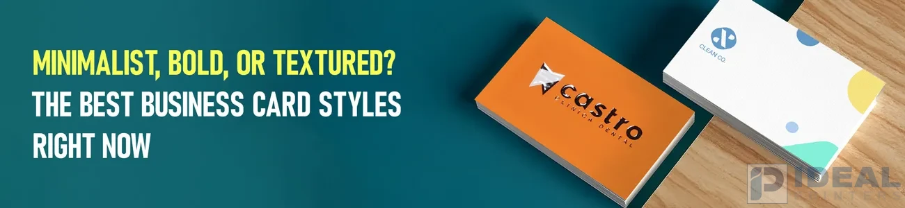

Minimalist, Bold, or Textured? The Best Business Card Styles Right Now

A business card is more than a means of exchanging contact information; it is your brand. Impression matters, whether you're meeting clients or exchanging your card in professional environments. Even in this day and age, printed business cards are still a powerful marketing tool that establishes trust and identity. With so many designs to select from, how do you choose the best one?
Let's explore the best business card design and tips on how to make yours unique.
1. Minimalist Business Cards: Simple and Clean
Minimalist cards are about Simple designs with no clutter. They utilize space efficiently, with clean fonts and muted colors.
Why They're Good:
- Always in style, regardless of the trends.
- Simple to read with just the important details.
- Looks professional, perfect for business professionals.
Best Features:
- Smooth finishes for a clean look.
- Light embossing to make important details stand out.
- Minimal colors for a contemporary feel.
Who Should Use Them?
Lawyers, business consultants, and business professionals.
2. Bold & Bright Business Cards: Stand Out Fast
Want to get noticed? Opt for bold Business cards with bright hues and unexpected shapes. Best for creatives and entrepreneurs.
Why They Work:
- Catchy and memorable.
- Exudes creativity and personality.
- Ideal for designers and marketers.
Popular Features:
- Vibrant colors for an eye-catching appearance.
- Distinctive shapes, not rectangles.
- Glossy highlights to important elements.
Who Should Use Them?
Designers, artists, and business owners.
3. Textured & Luxury Business Cards: Demonstrate Your Quality
For companies that wish to look premium, Textured cards are the best choice. They feel great and make a lasting impression.
Why They Stand Out:
- Provides a premium feel.
- Makes individuals wish to retain your card.
- Demonstrates high standards.
Best Textures:
- Raised designs for extra sophistication.
- Special paper types such as linen or suede.
- Foil accents for a reflective finish.
Who Should Use Them?
High-end brands, estate agents, and upscale services.
4. Eco-Friendly Business Cards: Good for the Planet
An increasing number of companies are opting for Environmentally friendly cards made from recycled materials and plant-based ink. They are lovely and demonstrate you are green-conscious.
Why Choose Eco-Friendly?
- Reduces waste.
- Appeals to customers who are concerned about the environment.
- Utilizes distinctive materials for a natural touch.
Best Choices:
- Recycled paper for a natural appearance.
- Bamboo cards that are biodegradable.
- Seed paper that can be planted.
Who Should Use Them?
Green brands and environmentally friendly businesses.
5. Interactive & Smart Business Cards: The Future
Digital cards are trendy, but interactive cards combine the best of both. QR codes or NFC chips connect to your online presence.
Why They're Trending:
- Connects to your website or social media in a snap.
- Impresses clients who are tech-savvy.
- Less need to carry multiple cards.
Popular Features:
- QR codes for instant access.
- NFC cards that pass on information with a tap.
- Augmented reality for an engaging experience.
Who Should Use Them?
Tech firms and online marketers.
Selecting the Right Style for You
Your card should be in style with your brand and industry:
- Minimalist: Business professionals.
- Bold: Creative business.
- Textured: High-end brands.
- Eco-Friendly: Green brands.
Whatever style you pick, your card must represent your brand and make an awesome impression.
Quality Business Cards in Lahore
Seeking high-end cards with your own designs? Ideal Printers provides excellent options that complement your brand and make you noticeable.
- Custom designs to your specifications
- Range of material and finishes
- Fast service and bulk-order discounts
- Phone: +92 42 3597 9285
- Email: idealprinter41@gmail.com
- Website: idealprinters.pk
- Office Location: G-2, Al-Rehman Centre, Shama Metro Station, 70-Ferozepur Road, Lahore